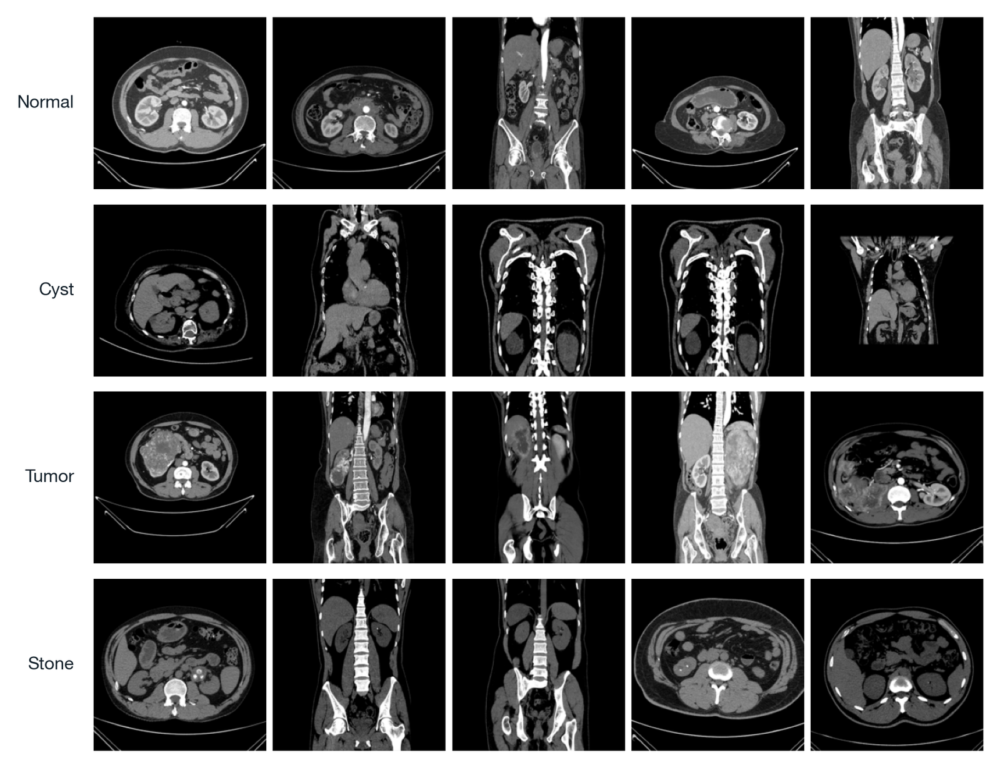
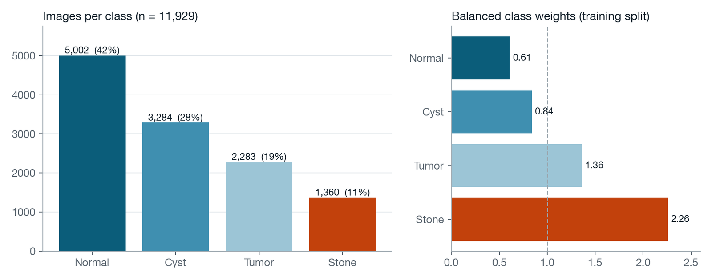
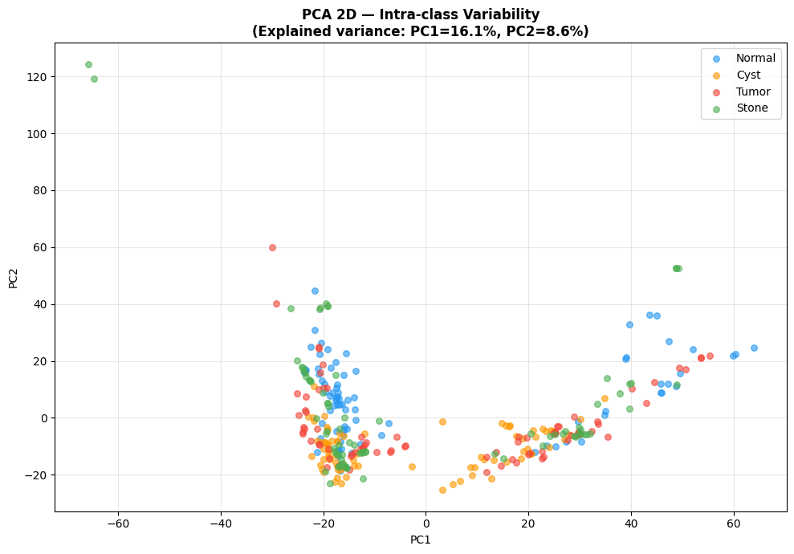

Medical imaging · Data quality
Kidney CT dataset audit
Before training a Normal / Cyst / Tumor / Stone classifier, I measured what could make its accuracy misleading: duplicates, imbalance, corrupt files and train–test leakage.
The problem
Public CT datasets often produce near-perfect classifiers for the wrong reasons. Slices from the same patient leak across splits, majority classes dominate, and acquisition differences correlate with labels. Without an audit, a later comparison of a CNN and a Vision Transformer would only measure how much each model memorised.
My contribution
- A reproducible inventory of every image: class, size, colour mode and file integrity.
- Per-class pixel-intensity statistics and histograms, plus screening for corrupt and near-blank images.
- Exact-duplicate detection with MD5 hashes and a lightweight perceptual-hash screen for near-duplicates.
- A group-aware stratified 70/15/15 split, which infers patient or series groups from file names, with integrity checks (no overlapping IDs, no missing paths) saved to
dataset_split.csv. - Balanced class weights and a
tf.dataloading and preprocessing pipeline (224 × 224, normalised).

Findings
| Check | Result |
|---|---|
| Images: Normal / Cyst / Tumor / Stone | 5,002 / 3,284 / 2,283 / 1,360 |
| Corrupt or near-blank images | 0 / 0 |
| Exact duplicates (MD5) | 0 |
| Majority / minority ratio | 3.7× |
| Dominant image size | 512 × 512 RGB, with a minority of other sizes |

model.fit so that minority classes count proportionally.
Limitations
- The perceptual hash flagged about 97% of images as near-duplicate candidates. That is too coarse to act on, so the screen is treated as inconclusive and only exact duplicates (none) were removed.
- The split step indexed 12,446 files against 11,929 in the inventory. The 517-file difference must be traced before final training.
- The dataset has no explicit patient IDs, so groups are inferred from file names. This lowers the risk of leakage but does not eliminate it.